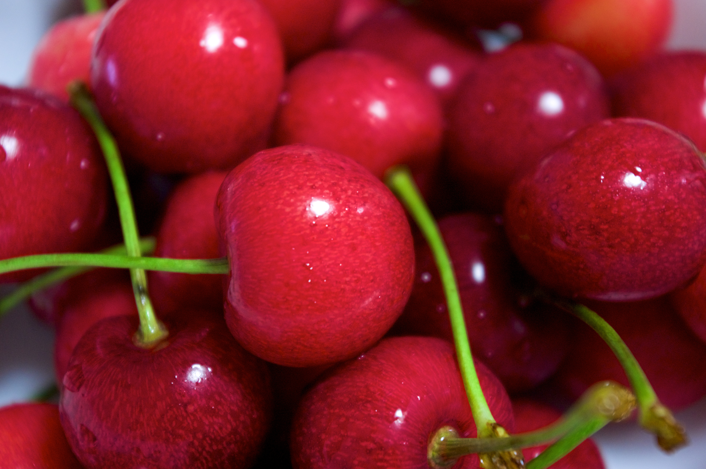

<h1 align="center" style="font-size:120">Cirese</h1>
<p align="center">

<br>
Un cireș este fructul multor plante din genul Prunus și este o drupă cărnoasă. Cireșele comerciale sunt obținute din soiuri de mai multe specii, cum ar fi Prunus avium dulce și Prunus cerasus acru.
</p>